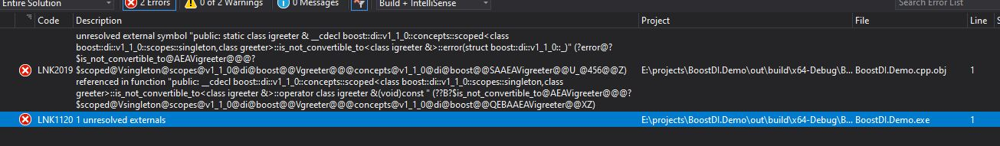

Adventures of a C# dev in C++ land - dependency injection
I stumbled upon Boost.DI by accident and was instantly intrigued: for a developer used to C#, dependency injection during compilation time sounds crazy.
Boost.DI uses C++ template metaprogramming to implement its functionality. If you are not familiar with it, take a look here.
Dependency Injection
Resolves dependencies during compilation sounds great as an optimization. The biggest problem with DI libraries in C# is performance.
Just take a look at IOC/DI library benchmarks!
In case you are not familiar with DI, a good place to start reading what it is and why it is needed is those slides from a conference talk.
Everything seems great in “hello world”-ish sample code I found at Boost.DI repository, but I wondered if actually using it would be as easy as it seems. Probably because its been a while since I wrote C++, I quickly ran into an issue. I came up with the following test code that should have worked.
1 |
|
It should have worked, but it failed with a cryptic error.

After fiddling around with code, I solved it. Apparently, because of the arcane rules of C++ and even more arcane rules of template magick, so I needed to change the declaration of greeter and add ‘public’ to inheritance declaration.
1 | class greeter : public igreeter //made the inheritance 'public' *facepalm* |
It actually worked!
Now, the only thing left in this case is to make message a named parameter, so not every class that has a std::string in its constructor will receive the value from the binding.
A minor change was needed to greeter declaration:
1 | auto msg = [] {}; //this is parameter 'name' |
And then, a minor change to dependency registration code:
1 | const auto injector = |
I continued to play around with the library, using it feels a bit awkward to me, but what do I know? I am not a C++ developer and it is likely I felt that way because I am used to the way C# IOC/DI libraries work.
Considering the fact that C++ has no reflection, I never thought a library with such rich functionality is even possible. (and I am very happy to be wrong!)
If you want to see how rich is the functionality, take a look at Boost.DI examples
And if any C++ developer reads this, do tell me if I wrote anything wrong here :)